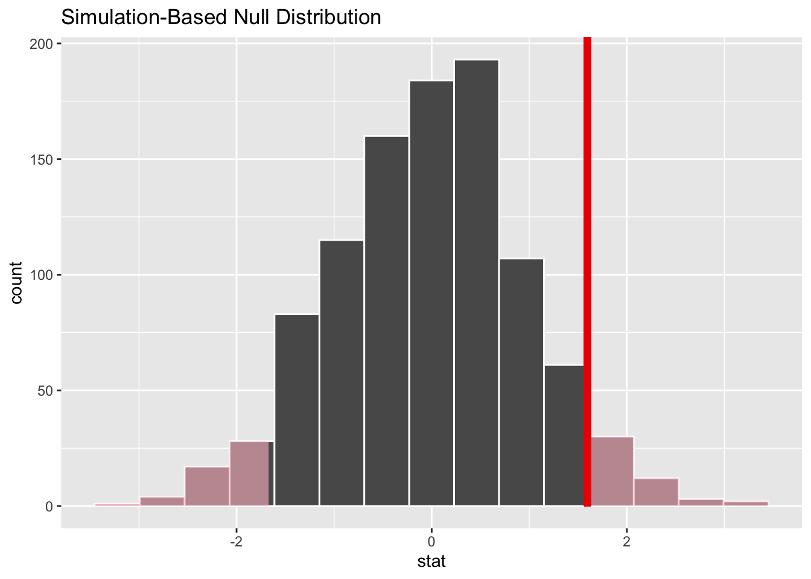
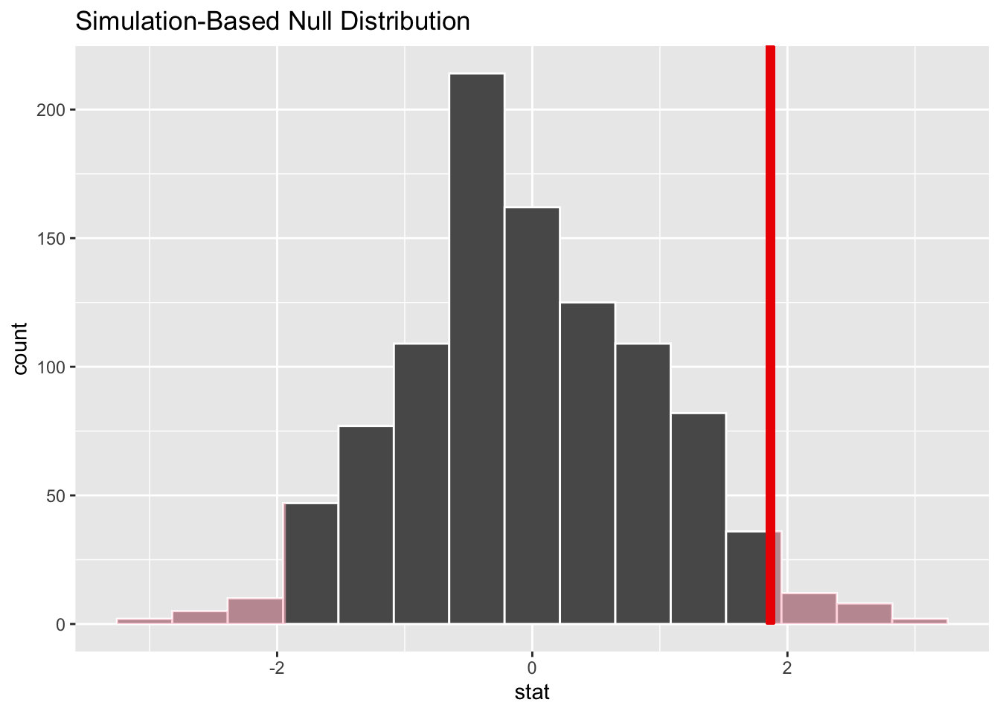

# the infer package is new, so we need to install it.
# this one only needs to be run one time
install.packages("infer")Hypothesis testing
Exercise: Hypothesis testing
Setup: run these two chunks first!
library(tidyverse)── Attaching core tidyverse packages ──────────────────────── tidyverse 2.0.0 ──
✔ dplyr 1.1.2 ✔ readr 2.1.4
✔ forcats 1.0.0 ✔ stringr 1.5.0
✔ ggplot2 3.4.2 ✔ tibble 3.2.1
✔ lubridate 1.9.2 ✔ tidyr 1.3.0
✔ purrr 1.0.1
── Conflicts ────────────────────────────────────────── tidyverse_conflicts() ──
✖ dplyr::filter() masks stats::filter()
✖ dplyr::lag() masks stats::lag()
ℹ Use the conflicted package (<http://conflicted.r-lib.org/>) to force all conflicts to become errorslibrary(openintro)Loading required package: airports
Loading required package: cherryblossom
Loading required package: usdata# we're adding the infer package to our lineup today
library(infer)Q1: Determining the correct hypothesis test, part 1. See slides from lecture 15 for solutions
For each of these research questions, identify the explanatory variable, the response variable, their types, and the correct statistical test. Think about what the data would look like for each individual in these cases
How does the amount of money a country spends on healthcare (per person) affect its average life expectancy?
- Explanatory variable(s) and type(s)?
- Response variable and type?
- Correct statistical test?
Q2: Determining the correct hypothesis test, part 2. See slides from lecture 15 for solutions
Same thing, new questions. For each, identify the explanatory variable, the response variable, their types, and the correct statistical test.
How is a patient’s body mass index related to the probability a doctor refers them to a specialist?
- Explanatory variable(s) and type(s)?
- Response variable and type?
- Correct statistical test?
How do outcomes of traffic stops (which can be warnings, citations, or arrests) vary by the driver’s race?
- Explanatory variable(s) and type(s)?
- Response variable and type?
- Correct statistical test?
Q3: Running your first hypothesis test!
We will be returning to the acs12 data for this exercise. We will be using two variables: gender and married.
Both are categorical variables with two categories (male/female for gender, yes/no for married), so we’ll use a two-sample Z test, just like in the class example.
Research question: How is someone’s gender identity related to their probability of being married?
Here’s a table to show the relationship between the two variables.
table(acs12$gender, acs12$married)
no yes
male 584 447
female 583 386Step 1: Calculate the test statistic
Then look at it in the data viewer. What is the Z score of this sample?
The Z score of this sample is about 1.6
(You might notice that R gives you a warning message. This is fine in this case! It just means we shouldn’t read into the positive/negative sign on the Z score. But since we’re doing a two-tailed test here, that didn’t matter anyway.)
test_stat <- acs12 |>
specify(explanatory = gender,
response = married,
success = "yes") |>
hypothesize(null = "independence") |>
calculate(stat = "z")Warning: The statistic is based on a difference or ratio; by default, for
difference-based statistics, the explanatory variable is subtracted in the
order "male" - "female", or divided in the order "male" / "female" for
ratio-based statistics. To specify this order yourself, supply `order =
c("male", "female")` to the calculate() function.Step 2: Simulate the null distribution
# 1. copy your code from above
# 2. change the name of the object from test_stat to null_dist
# 3. add generate(reps = 1000) in the correct place, like in the class example
null_dist <- acs12 |>
specify(explanatory = gender,
response = married,
success = "yes") |>
hypothesize(null = "independence") |>
generate(reps = 1000) |>
calculate(stat = "z")Setting `type = "permute"` in `generate()`.Warning: The statistic is based on a difference or ratio; by default, for
difference-based statistics, the explanatory variable is subtracted in the
order "male" - "female", or divided in the order "male" / "female" for
ratio-based statistics. To specify this order yourself, supply `order =
c("male", "female")` to the calculate() function.Step 3: Calculate the p value of your sample
Then interpret it. At a threshold value of p = 0.05, do you reject or fail to reject the null hypothesis that about the same number of men are married as women?
I fail to reject the null hypothesis that about the same number of men are married as women. My p value, 0.116, is above my cutoff value of 0.05.
get_p_value(null_dist,
obs_stat = test_stat,
direction = "two-sided")# A tibble: 1 × 1
p_value
<dbl>
1 0.132Step 4: Visualize where your sample is with respect to your null distribution
visualize(null_dist) +
shade_p_value(obs_stat = test_stat, direction = "two-sided")
Extra Credit
Q4: Run a hypothesis test to answer the research question below:
How is gender related to citizenship status among people who live in the US?
Use the acs12 data.
a: What are your null and alternative hypotheses?
Null: Gender is not related to citizenship status. Alternative: Gender is related to citizenship status.
b: What are the explanatory and response variables, and what types are they? What kind of test do you need to run?
Explanatory: gender; categorical with two categories Response: citizen; categorical with two categories Test: 2 sample Z test
# use this chunk to help you get a look at your data!
glimpse(acs12)Rows: 2,000
Columns: 13
$ income <int> 60000, 0, NA, 0, 0, 1700, NA, NA, NA, 45000, NA, 8600, 0,…
$ employment <fct> not in labor force, not in labor force, NA, not in labor …
$ hrs_work <int> 40, NA, NA, NA, NA, 40, NA, NA, NA, 84, NA, 23, NA, NA, N…
$ race <fct> white, white, white, white, white, other, white, other, a…
$ age <int> 68, 88, 12, 17, 77, 35, 11, 7, 6, 27, 8, 69, 69, 17, 10, …
$ gender <fct> female, male, female, male, female, female, male, male, m…
$ citizen <fct> yes, yes, yes, yes, yes, yes, yes, yes, yes, yes, yes, ye…
$ time_to_work <int> NA, NA, NA, NA, NA, 15, NA, NA, NA, 40, NA, 5, NA, NA, NA…
$ lang <fct> english, english, english, other, other, other, english, …
$ married <fct> no, no, no, no, no, yes, no, no, no, yes, no, no, yes, no…
$ edu <fct> college, hs or lower, hs or lower, hs or lower, hs or low…
$ disability <fct> no, yes, no, no, yes, yes, no, yes, no, no, no, no, yes, …
$ birth_qrtr <fct> jul thru sep, jan thru mar, oct thru dec, oct thru dec, j…table(acs12$citizen)
no yes
118 1882 table(acs12$gender)
male female
1031 969 c: Run your test!
# first: calculate your test statistic
test_stat <- acs12 |>
specify(explanatory = gender, response = citizen, success = "yes") |>
hypothesize(null = "independence") |>
calculate(stat = "z")Warning: The statistic is based on a difference or ratio; by default, for
difference-based statistics, the explanatory variable is subtracted in the
order "male" - "female", or divided in the order "male" / "female" for
ratio-based statistics. To specify this order yourself, supply `order =
c("male", "female")` to the calculate() function.# then: simulate your null distribution
null_dist <- acs12 |>
specify(explanatory = gender, response = citizen, success = "yes") |>
hypothesize(null = "independence") |>
generate(reps = 1000) |>
calculate(stat = "z")Setting `type = "permute"` in `generate()`.Warning: The statistic is based on a difference or ratio; by default, for
difference-based statistics, the explanatory variable is subtracted in the
order "male" - "female", or divided in the order "male" / "female" for
ratio-based statistics. To specify this order yourself, supply `order =
c("male", "female")` to the calculate() function.# next: calculate your p value
get_p_value(null_dist, obs_stat = test_stat, direction = "two-sided")# A tibble: 1 × 1
p_value
<dbl>
1 0.066# finally: visualize where you sample is with respect to your null distribution
visualize(null_dist) +
shade_p_value(obs_stat = test_stat, direction = "two-sided")
d: Interpret your results
With a threshold value of p = .05, do you reject or fail to reject your null hypothesis?
I fail to reject the null hypothesis that gender is related to citizenship status. There is not sufficient evidence in these data to conclude that there is a relationship. Women who live in the US are about as likely to be citizens as men.